Home / MLF / Week 5 / Real questions
MLF week 5 - real exam questions
50 questions pulled from past papers whose wording matches this week's topics, newest first, duplicates removed. Pick your answers, then press Check answers. Figures and answer keys are the originals.
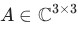
be a Hermitian matrix whose eigenvalues are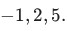
Which of the following statements is/are necessarily true? is positive definite.
is positive definite.- There exists a nonzero vector
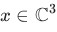
such that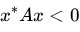
, where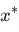
denotes the conjugate transpose of .
. - is invertible.
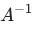
is Hermitian.

- Yes
- No
 Which of the following statements is correct?
Which of the following statements is correct?- is Hermitian only.
- is unitary only.
- is both Hermitian and unitary.
- is neither Hermitian nor unitary.
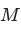
be a real symmetric matrix. Consider the following statements. (1) is orthogonally diagonalizable. (2) is not diagonalizable. (3) All the eigenvalues of are real. (4) The eigenvalues of may be imaginary. (5) Eigenvectors corresponding to distinct eigenvalues of are linearly independent. (6) Eigenvectors corresponding to distinct eigenvalues of are linearly dependent. Which of the above statements are true?- (1), (3), (5)
- (2), (4), (6)
- (2), (3), (5)
- (1), (4), (6)
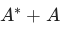
, where is a complex square matrix.
is a complex square matrix.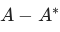
, where is a complex square matrix.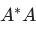
, where is a complex matrix, not necessarily square.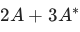
, where is a complex square matrix.
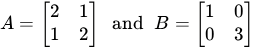
Which of the following options is/are correct
 is not positive definite.
is not positive definite.- is positive definite.
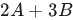
is positive definite.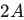
is not positive definite.
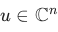
such that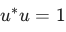
. Let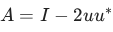
, where is the identity matrix. Which of the following is true?- is Hermitian and unitary.
- is Hermitian but not unitary.
- is unitary but not Hermitian.
- is neither Hermitian nor unitary.
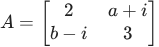
be a Hermitian matrix. Which of the following options is correct for the values of and
and  ?
?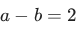
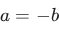
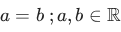
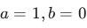
is a real matrix of shape 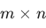
, which of the following is/are true?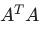
is a positive semi-definite matrix.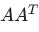
is a positive semi-definite matrix.- is positive semi-definite if and only if is a symmetric matrix.
- is positive semi-definite if and only if is a square matrix.
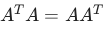
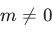
: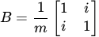
Which of the following options is/are correct?- is unitary for all real values of
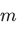
other than .
. - is unitary for
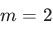
. - is unitary for
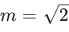
. - If , then all eigenvalues of satisfy
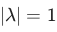
. - If is any non-zero real value, then all eigenvalues of satisfy .
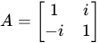
Which of the following is/are true
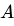
is Hermitian.- is unitary.
- is positive semi-definite.
- is positive definite.
- is invertible.

- A is an orthogonal matrix
- A is invertible
- A is symmetric
- True
- False

- A is not a Hermitian matrix.
- A is not a unitary matrix.
- A is diagonalizable.
- None of these

- Q is positive definite.
- Q is positive semi-definite.
- Q is negative definite.
- Q is negative semi-definite.
- None of these

- A is positive definite.
- A is positive semi-definite.
- A is negative definite.
- A is negative semi-definite.

- A is a Hermitian matrix.
- A is a unitary matrix.
- All eigenvalues of A are not real.
- Eigenvectors corresponding to different eigenvalues of A are not orthogonal.
- It is a symmetric matrix.
- It is an orthogonal matrix.
- It is orthogonally diagonalizable.
- It is always a rank 1 matrix.
- Singular value decomposition is possible only for a square matrix.
- Singular value decomposition is possible only for a symmetric matrix.
- The singular values of a matrix are always non-negative.
- The singular values of matrices A and AT are the same.
- Every square matrix is unitarily similar to an upper triangular matrix.
- The diagonal entries of the Schur form of a matrix are its eigenvalues.
- A square matrix with repeated eigenvalues cannot always be unitarily similarto an upper triangular matrix.
- Schur’s Theorem holds only for square matrices, as it requires unitarysimilarity and the presence of eigenvalues.
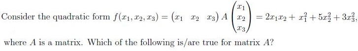
- A is a positive definite matrix.
- A is singular matrix.
- A is a symmetric matrix.
- A is a negative definite matrix.
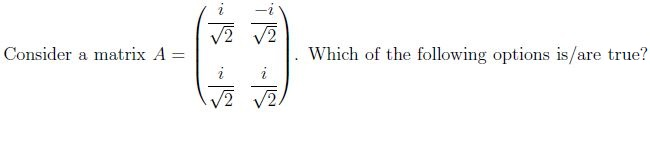
- A is a unitary matrix.
- A is Hermitian matrix.
- Eigenvectors of A are orthogonal.
- Eigenvalues of A are real.

- A is a positive definite matrix.
- A is not a singular matrix.
- A is not a symmetric matrix.
- A is a negative definite matrix.

- A is not a unitary matrix.
- A is Hermitian matrix.
- Eigenvectors of A are orthogonal.
- Eigenvalues of A are not real.
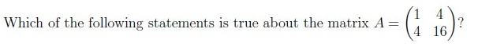
- A is positive definite.
- A is positive semi-definite.
- A is negative definite.
- A is negative semi-definite.
- Matrix A is symmetric matrix.
- Matrix A is Hermitian matrix.
- 1 + i is an eigenvalue of A.
- 2 − i is an eigenvalue of A.
- Matrix A is diagonalizable.

- positive definite.
- negative definite.

- A is a Hermitian matrix.
- A is digonalizable.
- All eigenvalue of A real.
- A has eigenvalues that are neither real nor purely imaginary.
- The eigenvectors of A may or may not be orthogonal.
- If A is similar to a diagonal matrix B, then B is also positive definite.
- AT A is not positive definite.
- AT A is not similar to a diagonal matrix.
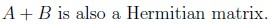
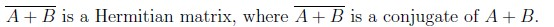
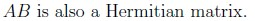
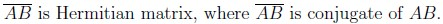
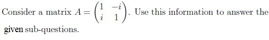
- A is the Hermitian matrix.
- A is the Unitary matrix.
- All eigenvalues are real.
- Eigenvalues are complex.
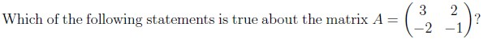
- A is positive definite.
- A is positive semi-definite.
- A is negative definite.
- A is negative semi-definite.
- AB is a symmetric matrix.
- AB is orthogonally diagonalizable.
- BA has real eigenvalues.
- AB is not a symmetric matrix.


- Only statement 2 is correct.
- Both statement 1 and statement 2 are incorrect.
- Both statement 1 and statement 2 are correct.
- Only statement 1 is correct.

- A is Hermitian matrix.
- A is not Hermitian matrix.
- A is unitarily diagonalizable.
- A is not unitarily diagonalizable.

- Yes
- No

- A − I (where I is the identity matrix of the same size) is also orthogonal.
- Both AB and BA are orthogonal.
- An and Bn are orthogonal for every n > 1.
- A and B are also symmetric matrices.
- AT A and AAT have the same rank.
- AT A and AAT have the same eigenvalues
- AT A and AAT have the same eigenvectors.
- AT A and AAT have the same singular values.


- The eigenvalues of a Hermitian matrix are always real.
- The diagonal elements of a Hermitian matrix are always real.
- All symmetric matrices are Hermitian.
- All Hermitian matrices are symmetric.
- A matrix that is both unitary and Hermitian must be a diagonal matrix.
- A matrix that is both unitary and Hermitian need not be a diagonal matrix.
- If matrix A is unitary, then A* is unitary.
- If matrix A is unitary then, A* may not be unitary.
- If a function is positive semidefinite, then it only has a global minimum.
- If a function is positive semidefinite, then it has both global minimum andglobal maximum.
- If a function is negative semidefinite, then it only has a global maximum.
- If a function is negative semidefinite, then it has both global minimum andglobal maximum.
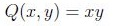
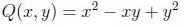
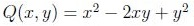
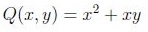
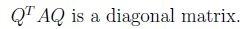
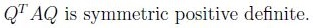
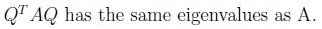
- Rank of a n × n Hermitian matrix is always equal to n.
- Rank of a n × n unitary matrix is always equal to n.
- If A is a Hermitian matrix, then AT is hermitian.
- Zero can be one of the eigen values of a unitary matrix.
- positive definite
- positive semi-definite
- negative definite
- negative semi-definite
- None of these

- positive definite
- positive semi-definite
- negative definite
- negative semi-definite
- Every positive definite matrix is invertible.
- A diagonal matrix with positive entries is positive definite.
- A symmetric with positive determinant is not necessarily positive definite.
- If matrix S is positive definite then S−1 may also be positive definite.